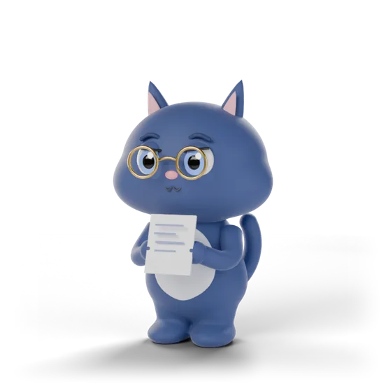

닉스 Nyx
내 강점이 읽히는 이력서
이력서를 진단하고, 고칠 문장을 함께 찾아요. 경험이 더 선명하게 보이도록.
취업 준비, 이제 함께해요
내 경험을 발견하고, 나다운 이력서를 쓰고,
면접에서 내 이야기를 꺼낼 수 있도록.
네 명의 작은 코치가 곁에서 도와줄게요.

문장 하나도, 더 나답게.이번엔 소리 내어 해볼까요?처음부터 잘 정리되어 있지 않아도 괜찮아요.
같은 이력서와 자료를 보며, 각자의 방식으로 도와줘요.
이력서를 진단하고, 고칠 문장을 함께 찾아요. 경험이 더 선명하게 보이도록.
프로젝트 폴더와 문서 속에서 내가 맡은 일과 성과를 찾아 이력서 문장으로 정리해요.
채용공고의 요건과 내 경험을 연결해, 맞춤 이력서와 문항별 자기소개서를 만들어요.
예상 질문에 글이나 목소리로 답하고 피드백을 받아요. 연습 기록도 다시 볼 수 있어요.
매번 파일을 다시 설명하지 않아도 돼요.
하나의 이력서를 바탕으로 경험 정리부터
지원서와 면접 준비까지 이어져요.
오른쪽은 기능을 설명하기 위한 예시 화면이에요.
경험의 가치를, 더 구체적으로.
서비스 성능 개선을 담당했습니다.
이미지 지연 로딩과 캐싱을 적용해
첫 화면 로딩 시간을 40% 줄였습니다.
먼저 이력서를 작성해 보세요.
AI 코칭이 필요하면 내 Claude 계정을 연결하면 돼요.
현재 시험판의 AI 기능에는 Claude Code를 이용할 수 있는 개인 유료 요금제가 필요해요. AI 사용량은 내 계정 한도에서 차감돼요. 계정을 연결하지 않고도 이력서 작성과 PDF 내보내기를 쓸 수 있어요.
자료가 어디로 가는지 알아보기